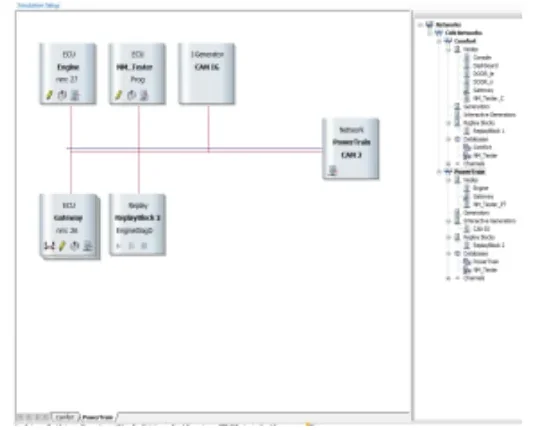
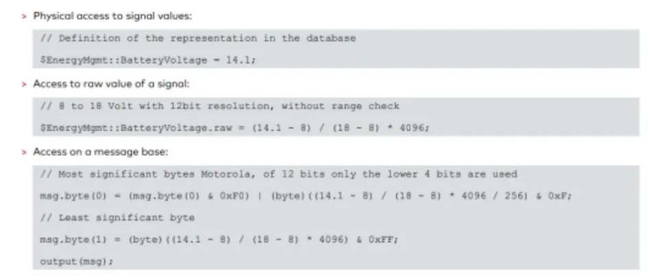

CAPL In Depth — Language, Events and Functions¶
This article reworks the material from two classroom CAPL sessions (April 2021) into a single reference. It covers the language from the ground up — what CAPL is and where it lives inside CANoe, its syntax and semantics, the event-procedure model, symbolic access to database objects, panels and environment variables, and the built-in function catalog.
Relationship to the main CAPL topic
This content intentionally overlaps with the main CAPL
article. Read it as a second pass over the same ground, with extra attention
to the syntax pitfalls that bite beginners: statically allocated local
variables, cancelTimer() misuse, putValue() infinite loops, and the
limits of environment variables.
What CAPL is and where it runs¶
CAPL (Communication Access Programming Language) is a C-based, event-driven programming language that exists only inside the Vector tool environment — CANalyzer, CANoe and vTESTstudio. Its main job is programming network node modules: the simulated ECUs that sit on the buses of a CANoe simulation and behave like real controllers.
Typical applications:
- analyze specific messages or specific data in the traffic;
- create and modify the tool's measurement environment;
- build a custom module tester (manufacturing tester, diagnostic or service tool);
- create a black box that simulates the rest of the network around a real ECU (rest-bus simulation);
- program a functional gateway between two different networks.
CAPL nodes in the Simulation Setup¶
In CANoe, each network (CAN, LIN, …) gets its own Simulation Setup window. The nodes drawn on a network are programmable with CAPL, and the window shows, for every network, the programmed nodes, the interrupt generators, and the attached databases — DBC for CAN, LDF for LIN, XML for MOST, FIBEX for FlexRay, ARXML for AUTOSAR.

Three icons on a node block tell you what you can do with it:
| Icon | Action |
|---|---|
| Pencil | Open / edit the node's CAPL program in the CAPL Browser |
| Sheets | Compile the CAPL program |
| Computer | Open the node's panel (does not affect the CAPL program) |
The CAPL Browser¶
CAPL code is written in the Vector CAPL Browser. Its tree on the left organizes the program into fixed sections:
- includes — external files;
- variables — global declarations;
- System —
on start,on timer xyz, and other system events; - Value Objects —
on signal_update xyzand similar; - CAN —
on messageprocedures; - Diagnostics —
on diagRequestand related; - Functions — user-defined functions.
On the right, the browser offers the CAPL function help and the Symbols view of the linked database (messages, signals and environment variables), so you can drag database objects straight into the code instead of typing their names.
CAPL vs. C¶
CAPL's syntax is C, but its execution model is different and its feature set is deliberately smaller:
- CAPL is event based, not interrupt driven — there is no
main(). - Not supported: header files, the preprocessor, macro definitions
(
#define), file inclusion, conditional compilation, pointers, structures, enumerations, unions,typedef,sizeof,extern,register, and the standard C library (CAPL instead links against dedicated CAPL DLLs). - No string data type: use character arrays instead.
voidexists only as a function return type.- On the plus side: you do not need to declare a function prototype before calling a user-defined function.
Syntax and semantics¶
Comments, naming and case¶
Comments are C-style (// line and /* … */ block). Names for variables,
arrays and functions may use letters and digits, but must not start with a
digit, and CAPL is case sensitive — value, Value and VALUE are three
different objects. Reserved C/CAPL keywords cannot be used as names.
Adopt a naming standard
Because everything is case sensitive, pick one naming style and stick to it. If CAPL programs are shared in a team, agree on an internal coding standard before the inconsistencies start costing debugging time.
Data types¶
The basic types are integer, character and floating point; message, timer
and msTimer behave like data types as well, because a declaration of one of
them creates a variable that stores and operates on that kind of data.
| Type | Meaning |
|---|---|
char, byte |
8-bit character / byte |
int, word |
16-bit integer / word |
long, dword |
32-bit integer / double word |
float, double |
synonyms — both are 64-bit IEEE floating point |
message |
CAN message object |
timer |
Timer with second resolution |
msTimer |
Timer with millisecond resolution |
Arithmetic is performed with 32-bit resolution for integers and 80-bit
resolution for floating point. Note that float signals defined in a
database are 32 bits, even though CAPL's own float is 64.
Declaration and initialization rules¶
- Global variables are declared in the
variablesblock (the Global Variables window of the CAPL Browser) and are visible everywhere. - The compiler initializes all numeric variables to
0and string variables to null — unlike standard C. - Message variables are initialized to the transmit request state with
the data field defaulted to
0. - Timer variables are not automatically initialized — they only exist
once armed with
setTimer(). - Timers must be declared globally; messages may be declared globally or locally.
- In event procedures, declare local variables before any other code.
CAPL local variables are static
Unlike C, local variables in CAPL are always statically allocated: they
are initialized only once — the first time the procedure or function runs —
and on every later execution they enter with the value they had at the end
of the previous call. A function containing byte value = 10; prints 10
the first time, but if the body sets value = 35, it prints 35 on every
subsequent call for as long as the measurement runs.
The safe pattern is a separate assignment after the declaration, so the variable is reset at the start of every call:
myFunc()
{
byte value; // declaration only
value = 10; // re-initialized on every call
...
}
Casting¶
Type conversion works like C — automatic conversion or an explicit cast with
the (type) expression syntax. The order matters when truncation is involved:
int v;
v = (1.6 + 1.7); // 3.3 truncated to int → 3
v = (int)1.6 + (int)1.7; // 1 + 1 → 2
Arrays and strings¶
- Arrays are collections of same-typed items, indexed from 0 (not 1), in one or more dimensions (integer and character arrays are the common cases).
- Elements can be initialized fully or partially with
{ … }; in a two-dimensional initializer, every row's closing brace except the last needs a comma. elCount(array)returns the number of elements.- Strings are
chararrays whose last element is the null character\0— so a 26-character string needs an array of size 27 (indices 0–26).
Constants¶
CAPL recognizes four kinds of constants:
| Constant type | Notes |
|---|---|
| Integer | Decimal or hexadecimal (0x…) |
| Floating point | Base 10; must contain a decimal point, an exponent, or both |
| Character | Single character in apostrophes, ASCII set |
| String | Characters in double quotes, stored as a char array with \0 |
There is no #define in CAPL — #define TRUE 1-style macros do not exist.
And although CAPL has no enum type, the database editor lets you define
enum-type attributes; to read such an attribute's symbolic value from CAPL,
copy it into a string with strncpy().
Operators¶
CAPL supports the familiar C operator families:
- arithmetic (
+ - * / %— but no exponential operator); - assignment (
=,+=,-=, …); - relational (
==,!=,<,>,<=,>=); - Boolean (
!,&&,||); - bitwise (
&,|,^,~, shifts); - miscellaneous (increment/decrement and friends).
Control statements¶
All the C control flow is available:
- selective branching —
if/if-else, andswitchwithcaseanddefault(the selector is tested against integer or character constants; without a matching case and withoutdefault, the switch does nothing); - looping —
while(condition checked before the body, so the body may never run),do-while(body runs at least once), andfor (init; condition; step); - unconditional branching —
breakexits the enclosing loop or switch immediately;continueskips to the next iteration;returnleaves the procedure or returns a value from a user-defined function (any basic type:int,float,long,double,char,byte,word).
Events and event procedures¶
A CAPL program is organized around event procedures: blocks bound to a single event that run only when that event occurs. Events are classified functionally:
- Message events —
on message; - Timer events —
on timer; - Keyboard events —
on key; - Error frame events —
on errorframe; - CAN controller events —
on busOff,on errorPassive,on errorActive,on warningLimit; - System (tool) events —
on preStart,on start,on stopMeasurement; - Environment variable events —
on envVar(CANoe only).
The this keyword¶
Inside an event procedure, this references the object that triggered the
event — the received message, the changed environment variable, and so on. It
behaves like a pointer to the current event's data. Only these procedures may
use it: on message, on envVar, on key, on errorframe (only to read the
CAN channel number), and the four CAN controller events (on busOff,
on errorPassive, on errorActive, on warningLimit).
Wildcards and precedence¶
The * symbol is a wildcard usable as the parameter of on key and
on message, so one procedure can handle every key press or every incoming
message. When several procedures could match the same event, CAPL resolves the
ambiguity with two precedence rules:
- an event procedure with a specified CAN channel beats one without a channel;
- an event procedure with a specific message ID beats a
*wildcard.
Timers¶
A timer is a programmable relative clock: you arm it with a duration, it runs,
and when it expires the matching on timer procedure executes. Using a timer
is always a three-step process:
- declare the timer in the
variablesblock (a timer cannot be declared inside an event procedure); - arm it with
setTimer()in an event procedure (any exceptpreStart) or a user-defined function; - handle it with an
on timerprocedure.
Two timer types exist, chosen by the unit you need:
variables
{
msTimer tenth_second_clock; // milliseconds
timer one_minute_clock; // seconds
}
on start
{
setTimer(tenth_second_clock, 100); // 100 ms
setTimer(one_minute_clock, 60); // 60 s
}
A timer fires once; the classic periodic pattern is to re-arm it inside its
own handler (declare globally, first setTimer() in on start, re-arm at the
start or end of on timer). A typical use is delayed or periodic message
transmission — e.g. send message 100 twenty milliseconds after the a key is
pressed, or re-send a cyclic message on every expiry.
cancelTimer() stops a running timer. It is also a classic source of bugs:
The cancelTimer() trap
Calling setTimer() on a timer that is still running is an error, so the
instinctive fix is to call cancelTimer() first and then re-arm. But if
the re-arm happens in an on key handler and the user presses the key
faster than the timer period, the timer is cancelled on every press and
never expires — the periodic message is never sent. The correct pattern is
to send the extra message directly in the key handler:
on key 'a'
{
output(msg1); // send immediately; leave the cyclic timer alone
}
Symbolic access to database objects¶
CAPL code normally talks to the bus symbolically through the linked database, not with raw bytes. The database describes a hierarchy of objects:
- Network node — a CAN controller plus transceiver inside an ECU; an ECU may host several nodes, each responsible for a set of functions.
- Message — a container for a block of data transmitted on the bus. Without a database, CANoe shows it numerically (hex/dec); with a database, it appears by name with its data field decoded.
- Signal — the actual data exchanged between nodes, encoded inside the message's data field. Signals must not overlap, and the database stores the conversion from raw value to physical (engineering) units.
- Environment variable — a data object global to the CANoe environment, used to link panels to CAPL programs (more below).
- Attribute — a characteristic of a database object (e.g. a message's cycle time); value tables define symbolic names for raw values, so data is displayed as meaningful text instead of numbers.
Physical, raw and message-level access¶
Signal values are generally accessed as physical values — the scaling
defined in the database is applied automatically, regardless of how the value
is encoded on the bus. When you need the unscaled number, use the .raw
selector; and as a last resort you can always assemble the payload byte by
byte on the message object.

The figure shows the same battery voltage (14.1 V, encoded as 0–18 V with 12-bit resolution) written three ways:
- physical —
$EnergyMgmt::BatteryVoltage = 14.1;lets the database do all scaling; - raw —
… .raw = (14.1 - 8) / (18 - 8) * 4096;skips the range check but still uses the signal's position in the message; - message base — pack
msg.byte(0)/msg.byte(1)manually with masks and shifts (Motorola format) and calloutput(msg);.
Prefer the highest level that works: the byte-level form is exactly where endianness and masking mistakes creep in.
Panels and environment variables¶
CANoe panels are custom GUIs — switches, gauges, sliders — that you build with Home → Panel → New Panel and bind to CAPL through environment variables.
The data flow in both directions:
flowchart LR
subgraph Panel["CANoe panel"]
CTL["Control element<br/>(switch, slider)"]
DSP["Display element<br/>(gauge, LED)"]
end
CTL -- "user clicks → value changes" --> EV["Environment variable<br/>(defined in database)"]
EV -- "on envVar event" --> CAPL["CAPL node"]
CAPL -- "putValue()" --> EV
EV --> DSP
CAPL -- "output()" --> BUS(("CAN bus"))Rules that matter:
- Every dynamic control on a panel should be associated with an environment
variable at creation time. When the user operates the control, the variable
changes and the corresponding
on envVarprocedure executes in CAPL. - Environment variables are defined in the database alongside messages and
signals — they cannot be declared in CAPL. Each has a data type:
INTEGER,FLOAT,STRING(ASCII text) orDATA(raw bytes). - The link is bidirectional: when CAPL changes an environment variable, the panel controls bound to it update their displayed state.
- Display-only elements can also be attached to a signal to show its live value — e.g. an analog gauge whose unit text, layout style (dial angle) and min/max range you set in the element's properties to match the signal.
- At measurement start, CANoe initializes all environment variables to the default value stored in the database.
Environment variables do not travel on the bus
Environment variables are global to the whole CANoe configuration, which
makes them tempting for exchanging data between simulated nodes. Do not
do this. Panels and environment variables cannot exchange data with a
real module — the only way onto a CAN network is a CAN message. A
simulation that "works" through environment variables hides the mistake
until the day a real ECU replaces a simulated node and the communication
silently stops. Use environment variables for panel I/O only; use
output() and messages for everything else.
The CAPL function catalog¶
Environment variable functions¶
| Function | Purpose |
|---|---|
putValue() |
Set or initialize an environment variable (2–3 parameters depending on type) |
getValue() |
Read an environment variable (five formats; for STRING/DATA returns the number of bytes copied) |
getValueSize() |
Size of an environment variable |
callAllOnEnvVar() |
Execute all on envVar procedures, forcing initialization |
callAllOnEnvVar() is normally called in on start to bring every environment
variable to its intended starting state — useful when you need to initialize
variables, arm timers, or send messages containing the starting values.
Two traps with putValue():
putValue() is for initialization
putValue()sets the variable's value but does not generate the change event machinery you might expect during runtime — treat it as an initialization tool, not the mechanism to drive values while the program runs afteron start.- Never call
putValue(this)inside anon envVarprocedure — the write re-triggers the same event procedure and you get an infinite loop.
Panel functions¶
| Function | Purpose |
|---|---|
putValueToControl() |
Assign a value to a multi-display control without an environment variable |
enableControl() |
Enable/disable panel elements (help elements, recorder elements, buttons, controls bound to variables or signals) |
setControlBackColor() / setControlForeColor() |
Change element colors at runtime |
makeRGB() |
Compose a color value for the two functions above |
Message and identifier functions¶
isStdId()/isExtId()— check whether a received message carries an 11-bit or 29-bit identifier;mkExtId()— convert an 11-bit identifier into a 29-bit one;output()— transmit a message from the node (nothing reaches the bus without it).
Byte-order conversion¶
CAPL provides functions to convert data bytes between Intel (little-endian) and Motorola (big-endian) formats so you can extract the correct signal value by hand. When a database is linked, the byte order is already a property of each signal and CANoe/CANalyzer performs the conversion automatically — another reason to prefer symbolic access.
CAN controller control¶
setBtr()— set/reset the baud rate of a channel; call it beforeresetCanEx()if the baud rate must change.resetCanEx()— reset one CAN controller;resetCan()— reset all of them at once.- Resetting disconnects the controller, so everything in the transmit and receive queues is lost.
Usually you just restart the measurement to reset controllers; if the
measurement must keep running, implement on busOff and reset the controller
from there so the node recovers by itself.
Logging control¶
CAPL can start and stop the Logging block programmatically: call
startLogging() when your trigger condition occurs. The block's time settings
can be offset from CAPL: the pretrigger time is how much bus activity is
recorded before the trigger, the posttrigger time how much is recorded
after logging stops. Example pattern from the lesson: key 1 starts logging
with a 1000 ms pretrigger, key 2 stops it with a 2000 ms posttrigger — ideal
for capturing the context around a fault.
Math functions¶
The usual C-style math functions (sin, cos, the built-in constant PI, …)
are available for complex calculations, and you can compose your own:
double x;
x = cos(PI); // returns -1
double tangent(double x) // user-defined function
{
return sin(x) / cos(x);
}
Write window and keyboard polling¶
write() outputs formatted text and values to the Write window — the main
debugging tool. Combined with keypressed() you can build quick interactive
behaviors, like transmitting a message while a key is held down:
variables
{
msTimer mytimer;
message 100 msg;
}
on key F1
{
setTimer(mytimer, 100);
write("F1 pressed");
}
on timer mytimer
{
if (keypressed()) // any key still down?
{
setTimer(mytimer, 100); // keep polling every 100 ms
output(msg); // send while the key is pressed
}
else write("F1 released");
}
Time, drift and jitter¶
When a measurement starts, the system clock initializes and runs independently of the Windows timers; every message on the bus gets a timestamp from the CAN controller, which is what you use for network timing tests such as node responsiveness.
| Function | Purpose |
|---|---|
timeNow() |
Current measurement time |
timeDiff() (or the TIME selector) |
Time between two messages/events |
getLocalTime() / getLocalTimeString() |
The Windows clock, when you need wall time |
setDrift(d) |
Constant deviation of all node timers, −100 % … +100 % |
setJitter(min, max) |
Fluctuation interval for all node timers |
getDrift() / getJitterMin() / getJitterMax() |
Read back the current settings |
Drift and jitter interact
Setting setDrift() resets the jitter and vice versa — the two functions
overwrite each other. To apply both a drift and a jitter, call
setJitter() alone with the combined settings.
Key takeaways
- CAPL is C syntax with an event-driven core: no
main(), no pointers, structs or preprocessor — just event procedures, globals and functions. - Local variables are statically allocated: re-assign them at the top of the procedure if you need fresh values on every call.
- Timers are declare →
setTimer()→on timer; re-arm inside the handler for periodic work, and never shieldsetTimer()withcancelTimer()in a key handler. - Access signals symbolically (physical value first,
.rawsecond, byte packing last); environment variables connect panels to CAPL, never node to node. - Know the function catalog:
output()for the bus,putValue()/getValue()/callAllOnEnvVar()for environment variables,startLogging()for capture control,setDrift()/setJitter()for timing robustness tests.
Where to go next
Consolidate these concepts with the CAPL topic and the CAPL exercises, and see the tool context in CANoe.
Source material¶
This article was distilled from the academy lesson materials:
- :material-file-pdf-box: Academy Kineton CAPL2 22 04 21 — PDF, 235.1 KB
- :material-file-pdf-box: Academy Kineton CAPL 20 04 21 — PDF, 261.6 KB